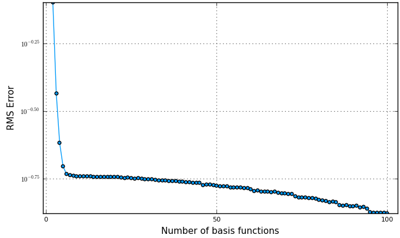
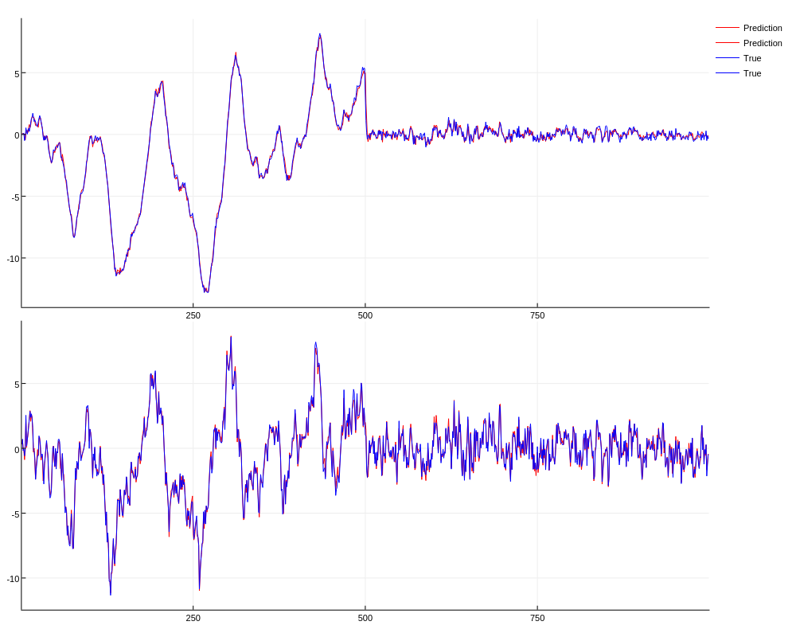

BasisFunctionExpansions


A Julia toolbox for approximation of functions using basis function expansions (BFEs).
BFEs are useful when one wants to estimate an arbitrary/unknown/complicated functional relationship between (in the simple case) two variables, and . In simple linear regression, we might consider a functional relationship , with parameters and . However, if the function has an arbitrary nonlinar form, it might be hard to come up with suitable basis functions to use for linear regression. This package provides a set of convenient methods to estimate as a linear combination of basis functions, such as radial basis functions, for situations where has a single or multiple dimensions.
- BasisFunctionExpansions
- Exported functions and types
- Usage
- Selecting the number of basis functions
- Dynamics modeling
- Gradients
- Learn more
- Index
Exported functions and types
#
BasisFunctionExpansions.BasisFunctionApproximation — Type.
BasisFunctionApproximation(y::Vector, v, bfe::BasisFunctionExpansion, λ = 0)
Perform parameter identification to identify the Function y = ϕ(v), where ϕ is a Basis Function Expansion of type bfe. λ is an optional regularization parameter (L² regularization).
#
BasisFunctionExpansions.MultiDiagonalRBFE — Type.
A MultiDiagonalRBFE has different diagonal covariance matrices for all basis functions See also MultiUniformRBFE, which has the same covariance matrix for all basis functions
#
BasisFunctionExpansions.MultiDiagonalRBFE — Method.
MultiDiagonalRBFE(v::AbstractVector, nc; normalize=false, coulomb=false)
Supply scheduling signal v and numer of centers nc For automatic selection of covariance matrices and centers using K-means.
The keyword normalize determines weather or not basis function activations are normalized to sum to one for each datapoint, normalized networks tend to extrapolate better "The normalized radial basis function neural network" DOI: 10.1109/ICSMC.1998.728118
#
BasisFunctionExpansions.MultiDiagonalRBFE — Method.
MultiDiagonalRBFE(μ::Matrix, Σ::Vector{Vector{Float64}}, activation)
Supply all parameters. Σ is the diagonals of the covariance matrices
#
BasisFunctionExpansions.MultiRBFE — Type.
A MultiRBFE has different diagonal covariance matrices for all basis functions See also MultiUniformRBFE, which has the same covariance matrix for all basis functions
#
BasisFunctionExpansions.MultiRBFE — Method.
MultiRBFE(v::AbstractVector, nc; normalize=false, coulomb=false)
Supply scheduling signal v and numer of centers nc For automatic selection of covariance matrices and centers using K-means.
The keyword normalize determines weather or not basis function activations are normalized to sum to one for each datapoint, normalized networks tend to extrapolate better "The normalized radial basis function neural network" DOI: 10.1109/ICSMC.1998.728118
#
BasisFunctionExpansions.MultiRBFE — Method.
MultiRBFE(μ::Matrix, Σ::Vector{Vector{Float64}}, activation)
Supply all parameters. Σ is the diagonals of the covariance matrices
#
BasisFunctionExpansions.MultiUniformRBFE — Type.
A MultiUniformRBFE has the same diagonal covariance matrix for all basis functions See also MultiDiagonalRBFE, which has different covariance matrices for all basis functions
#
BasisFunctionExpansions.MultiUniformRBFE — Method.
MultiUniformRBFE(v::AbstractVector, Nv::Vector{Int}; normalize=false, coulomb=false)
Supply scheduling signal and number of basis functions For automatic selection of centers and widths
The keyword normalize determines weather or not basis function activations are normalized to sum to one for each datapoint, normalized networks tend to extrapolate better "The normalized radial basis function neural network" DOI: 10.1109/ICSMC.1998.728118
#
BasisFunctionExpansions.MultiUniformRBFE — Method.
MultiUniformRBFE(μ::Matrix, Σ::Vector, activation)
Supply all parameters. Σ is the diagonal of the covariance matrix
#
BasisFunctionExpansions.UniformRBFE — Type.
A Uniform RBFE has the same variance for all basis functions
#
BasisFunctionExpansions.UniformRBFE — Method.
UniformRBFE(μ::Vector, σ::Float, activation)
Supply all parameters. OBS! σ can not be an integer, must be some kind of AbstractFloat
#
BasisFunctionExpansions.UniformRBFE — Method.
UniformRBFE(v::Vector, Nv::Int; normalize=false, coulomb=false)
Supply scheduling signal and number of basis functions For automatic selection of centers and widths
The keyword normalize determines weather or not basis function activations are normalized to sum to one for each datapoint, normalized networks tend to extrapolate better "The normalized radial basis function neural network" DOI: 10.1109/ICSMC.1998.728118
#
BasisFunctionExpansions.get_centers — Function.
vc,γ = get_centers(bounds, Nv, coulomb=false, coulombdims=0)
#
BasisFunctionExpansions.get_centers_automatic — Function.
vc,γ = get_centers_automatic(v::AbstractMatrix, Nv::AbstractVector{Int}, coulomb=false, coulombdims=0)
#
BasisFunctionExpansions.get_centers_automatic — Function.
vc,γ = get_centers_automatic(v::AbstractVector,Nv::Int,coulomb = false)
Usage
We demonstrate typical usage with some examples.
The idea is to create an object representing an expansion. This object contains information regarding the domain of the expansion, which type of basis functions used and how many. These objects are, once created, callable with a scheduling vector/matrix. A call like this returns a vector/matrix of basis function activations.
To reconstruct a signal, a linear combination of basis functions must be estimated. To facilitate this, a second type of object is available: BasisFunctionApproximation. Once created, BasisFunctionApproximations are callable with a scheduling signal and return an estimate of the output. The parameter estimation is performed behind the scenes using standard linear regression (least-squares). An optional regularization parameter can be supplied if needed, see ?BasisFunctionApproximation for help.
Plotting functionality requires Plots.jl
Single dimension
We start by simulating a signal and a scheduling signal . The task is to estimate a function , where is a basis function expansion.
N = 1000
v = linspace(0,10,N) # Scheduling signal
y = randn(N) # Signal to be approximated
y = filt(ones(500)/500,[1],y)
Next, we setup the basis function expansion object rbf and use it to create a reconstruction object bfa
Nv = 10 # Number of basis functions
rbf = UniformRBFE(v,Nv, normalize=true) # Approximate using radial basis functions with constant width
bfa = BasisFunctionApproximation(y,v,rbf,1) # Create approximation object
ŷ = bfa(v) # Reconstruct signal using approximation object
scatter(v,y, lab="Signal")
scatter!(v,ŷ, lab="Reconstruction")
For comparison, we can also plot the regular linear regression for varying orders of .
A = v.^(0:3)'
ŷ_linreg = [A[:,1:i]*(A[:,1:i]\y) for i=2:4]
plot!(v,hcat(ŷ_linreg...), lab=["Linear regression order $i" for i=1:3]')

As we can see from the figure, the linear combination of basis functions forming the reconstruction has learnt the overall structure of the signal . To capture more detail, one can try to increase the number of basis functions. The final choice of this number is a tradeoff between reconstruction bias and variance, where a high number of basis functions can model the signal in great detail, but may increase the variance if data is sparse.
Plotting
BasisFunctionExpansion objects can be plotted if Plots.jl is loaded. This works for 1 and 2 dimensional expansions only.
N = 200
v = linspace(0,10,N)
y = 0.1*(v-2).*(v-7) + 0.2randn(N)
rbf = UniformRBFE(v, 5, normalize = true)
bfa = BasisFunctionApproximation(y,v,rbf)
scatter(v,y,lab="Signal",c=:orange, subplot=1, xlabel="\$v\$", size=(600,300))
plot!(rbf)
plot!(v,bfa(v),lab="Reconstruction",c=:blue,linewidth=2)

Multiple dimensions
We now demonstrate the same thing but with . To create a nice plot, we let form a spiral with increasing radius.
using BasisFunctionExpansions
N = 1000
x = linspace(0,4pi,N)
v = [cos(x) sin(x)].*x # Scheduling signal
y = randn(N) # Signal to be approximated
y = filt(ones(500)/500,[1],y)
Now we're creating a two-dimensional basis function expansion using ten functions in each dimension (for a total of 10*10=100 parameters).
Nv = [10,10] # Number of basis functions along each dimension
rbf = MultiUniformRBFE(v,Nv, normalize=true) # Approximate using radial basis functions with constant width (Not isotropic, but all functions have the same diagonal covariance matrix)
bfa = BasisFunctionApproximation(y,v,rbf,0.0001) # Create approximation object
ŷ = bfa(v) # Reconstruct signal using approximation object
scatter3d(v[:,1],v[:,2],y, lab="Signal")
scatter3d!(v[:,1],v[:,2],ŷ, lab="Reconstruction")

To visualize also the basis functions, we can simply call plot!(rbf) (the exclamation mark adds to the current plot instead of creating a new one). Below is an example when a 5x5 BFE is visualized using plotly as backend.

Nonuniform covariance
We can let all centers have different (diagonal) covariance matrices using the type MultiDiagonalRBFE. In this case, good center locations and covariances are estimated using K-means clustering. With this strategy, we can usually get away with much fewer basis functions compared to a uniform grid. A drawback is that we must know in advance which area of the scheduling signal space is of interest.
Nc = 8
rbf = MultiDiagonalRBFE(v,Nc, normalize=true)
bfa = BasisFunctionApproximation(y,v,rbf,0.0001)
yhat = bfa(v)
scatter3d(v[:,1],v[:,2],y, lab="Signal")
scatter3d!(v[:,1],v[:,2],yhat, lab="Reconstruction")
Full covariance
For the type MultiRBFE The covariance matrix and center locations are esimated using K-means.
Nc = 8 # Number of centers/BFs
rbf = MultiRBFE(v,Nc, normalize=true)
bfa = BasisFunctionApproximation(y,v,rbf,0.0001)
yhat = bfa(v)
scatter3d(v[:,1],v[:,2],y, lab="Signal")
scatter3d!(v[:,1],v[:,2],yhat, lab="Reconstruction")
Selecting the number of basis functions
A simple way of choosing the number of basis functions is to plot an L-curve (parameter vs. error). A suitable number is where the kink in the curve occurs, for this example at around 6 basis functions.
N = 200
v = linspace(0,10,N)
y = 0.1*(v-2).*(v-7) + 0.2randn(N)
nvec = 2:100
lcurve = map(nvec) do n
rbf = UniformRBFE(v, n, normalize = true)
bfa = BasisFunctionApproximation(y,v,rbf)
std(y-bfa(v))
end
plot(nvec, lcurve, yscale=:log10, ylabel="RMS Error", xlabel="Number of basis functions")

Dynamics modeling
#
BasisFunctionExpansions.LPVSS — Type.
Convenience tyoe for estimation of LPV state-space models
#
BasisFunctionExpansions.LPVSS — Method.
LPVSS(x, u, nc; normalize=true, λ = 1e-3)
Linear Parameter-Varying State-space model. Estimate a state-space model with varying coefficient matrices x(t+1) = A(v)x(t) + B(v)u(t). Internally a MultiRBFE spanning the space of X × U is used. x and u should have time in first dimension. Centers are found automatically using k-means, see MultiRBFE.
Examples
using Plots, BasisFunctionExpansions
x,xm,u,n,m = BasisFunctionExpansions.testdata(1000)
nc = 10 # Number of centers
model = LPVSS(x, u, nc; normalize=true, λ = 1e-3) # Estimate a model
xh = model(x,u) # Form prediction
eRMS = √(mean((xh[1:end-1,:]-x[2:end,:]).^2))
plot(xh[1:end-1,:], lab="Prediction", c=:red, layout=2)
plot!(x[2:end,:], lab="True", c=:blue); gui()
eRMS <= 0.37
# output
true
#
BasisFunctionExpansions.LPVSS — Method.
LPVSS(x, u, v, nc; normalize=true, λ = 1e-3)
Linear Parameter-Varying State-space model. Estimate a state-space model with varying coefficient matrices x(t+1) = A(v)x(t) + B(v)u(t). Internally a MultiRBFE or UniformRBFE spanning the space of v is used, depending on the dimensionality of v. x, u and v should have time in first dimension. Centers are found automatically using k-means, see MultiRBFE.
Examples
using Plots, BasisFunctionExpansions
T = 1000
x,xm,u,n,m = BasisFunctionExpansions.testdata(T)
nc = 4
v = 1:T
model = LPVSS(x, u, v, nc; normalize=true, λ = 1e-3)
xh = model(x,u,v)
eRMS = √(mean((xh[1:end-1,:]-x[2:end,:]).^2))
plot(xh[1:end-1,:], lab="Prediction", c=:red, layout=(2,1))
plot!(x[2:end,:], lab="True", c=:blue); gui()
eRMS <= 0.26
# output
true
#
BasisFunctionExpansions.getARXregressor — Method.
getARXregressor(y::AbstractVector,u::AbstractVecOrMat, na, nb)
Returns a shortened output signal y and a regressor matrix A such that the least-squares ARX model estimate of order na,nb is y\A
Return a regressor matrix used to fit an ARX model on, e.g., the form A(z)y = B(z)f(u) with output y and input u where the order of autoregression is na and the order of input moving average is nb
Example
Here we test the model with the Function f(u) = √(|u|)
A = [1,2*0.7*1,1] # A(z) coeffs
B = [10,5] # B(z) coeffs
u = randn(100) # Simulate 100 time steps with Gaussian input
y = filt(B,A,sqrt.(abs.(u)))
yr,A = getARXregressor(y,u,3,2) # We assume that we know the system order 3,2
bfe = MultiUniformRBFE(A,[2,2,4,4,4], normalize=true)
bfa = BasisFunctionApproximation(yr,A,bfe, 1e-3)
e_bfe = √(mean((yr - bfa(A)).^2)) # (0.005174261451622258)
plot([yr bfa(A)], lab=["Signal" "Prediction"])
See README (?BasisFunctionExpansions) for more details
#
BasisFunctionExpansions.getARregressor — Method.
y,A = getARregressor(y::AbstractVector,na::Integer)
Returns a shortened output signal y and a regressor matrix A such that the least-squares AR model estimate of order na is y\A
#
BasisFunctionExpansions.output_variance — Function.
output_variance(model::LPVSS, x::AbstractVector, u::AbstractVector, v=[x u])
Return a vector of prediction variances. Note, no covariance between dimensions in output is provided
#
BasisFunctionExpansions.predict — Function.
predict(model::LPVSS, x::AbstractMatrix, u, v=[x u])
If no v provided, return a prediction of the output x' given the state x and input u
Provided v, return a prediction of the output x' given the state x, input u and scheduling parameter v
#
BasisFunctionExpansions.predict — Method.
predict(model::LPVSS, x::AbstractMatrix, u)
Return a prediction of the output x' given the state x and input u This function is called when a model::LPVSS object is called like model(x,u)
#
BasisFunctionExpansions.toeplitz — Method.
toeplitz{T}(c::AbstractArray{T},r::AbstractArray{T})
Returns a Toeplitz matrix where c is the first column and r is the first row.
LPV ARX modeling
We can use basis function expansions for identification of elementary, non-linear dynamics models. Consider the following dynamical system, with a non-linearity on the input We can simulate this system using the code
A = [1,2*0.7*1,1] # A(z) coeffs
B = [10,5] # B(z) coeffs
u = randn(100) # Simulate 100 time steps with Gaussian input
y = filt(B,A,sqrt.(abs.(u)))
We can now try to fit a regular ARX model to this input-output data
yr,A = getARXregressor(y,u,3,2) # We assume that we know the system order 3,2
x = A\yr # Fit using standard least-squares
e_arx = √(mean((yr - A*x).^2)) # Calculate RMS error (4.2553882233771025)
plot([yr A*x], lab=["Signal" "ARX prediction"])

Due to the non-linearity at the input of the system, the linear model fails to fit the data well. Our next attempt is a non-linear model based on BFEs. We select the simplest form of multi-dimensional BFE, MultiUniformRBFE and further select to cover the state-space with 2 basis functions along each dimension corresponding to , and 4 basis functions along each dimension corresponding to for a total of 2^2*4^3=256 parameters (4 basis functions is the smallest number that can somewhat accurately fit ). The number of parameters in this case is large compared to the number of data points, we will need some regularization to fit this model properly. The regularization choice is made when forming the BasisFunctionApproximation and the strength is determined by the last argument 1e-3 in this case.
bfe = MultiUniformRBFE(A,[2,2,4,4,4], normalize=true)
bfa = BasisFunctionApproximation(yr,A,bfe, 1e-3)
e_bfe = √(mean((yr - bfa(A)).^2)) # (0.005174261451622258)

The non-linear model fits the data much better!
We also note that if we knew in advance that the system is linear with a non-linearity on the input, we could do this in a slightly more efficient way by incorporating lagged values of directly in the regressor, instead of expanding the lagged values of in a BFE. If we knew the exact non-linearity, we could simply transform our measured signal and use it as input. With the LPV model, however, we can estimate the shape of the non-linearity.
LPV State-space modeling
We can also estimate a state-space model with varying coefficient matrices, i.e. a model on the form
This is accomplished using the built in convenience type LPVSS
Under the hood, the system , which is linear in the parameters of and , is written on the form , where is a regressor matrix consisting of and , and are the coefficients to be estimated for each .
using Plots, BasisFunctionExpansions
T = 1000
x,xm,u,n,m = BasisFunctionExpansions.testdata(T)
nc = 4
v = 1:T
model = LPVSS(x, u, v, nc; normalize=true, λ = 1e-3)
xh = model(x,u,v)
eRMS = √(mean((xh[1:end-1,:]-x[2:end,:]).^2))
plot(xh[1:end-1,:], lab="Prediction", c=:red, layout=(2,1))
plot!(x[2:end,:], lab="True", c=:blue); gui()
/home/travis/.julia/v0.6/GR/src/../deps/gr/bin/gksqt: error while loading shared libraries: libQt5Widgets.so.5: cannot open shared object file: No such file or directory
connect: Connection refused
GKS: can't connect to GKS socket application
Did you start 'gksqt'?
GKS: Open failed in routine OPEN_WS
GKS: GKS not in proper state. GKS must be either in the state WSOP or WSAC in routine ACTIVATE_WS
GKS: GKS not in proper state. GKS must be either in the state WSAC or SGOP in routine FILLAREA
GKS: GKS not in proper state. GKS must be either in the state WSAC or SGOP in routine FILLAREA
GKS: GKS not in proper state. GKS must be either in the state WSAC or SGOP in routine POLYLINE
GKS: GKS not in proper state. GKS must be either in the state WSAC or SGOP in routine POLYLINE
GKS: GKS not in proper state. GKS must be either in the state WSAC or SGOP in routine POLYLINE
GKS: GKS not in proper state. GKS must be either in the state WSAC or SGOP in routine POLYLINE
GKS: GKS not in proper state. GKS must be either in the state WSAC or SGOP in routine POLYLINE
GKS: GKS not in proper state. GKS must be either in the state WSAC or SGOP in routine POLYLINE
GKS: GKS not in proper state. GKS must be either in the state WSAC or SGOP in routine POLYLINE
GKS: GKS not in proper state. GKS must be either in the state WSAC or SGOP in routine POLYLINE
GKS: GKS not in proper state. GKS must be either in the state WSAC or SGOP in routine POLYLINE
GKS: GKS not in proper state. GKS must be either in the state WSAC or SGOP in routine POLYLINE
GKS: GKS not in proper state. GKS must be either in the state WSAC or SGOP in routine POLYLINE
GKS: GKS not in proper state. GKS must be either in the state WSAC or SGOP in routine POLYLINE
GKS: GKS not in proper state. GKS must be either in the state WSAC or SGOP in routine POLYLINE
GKS: GKS not in proper state. GKS must be either in the state WSAC or SGOP in routine POLYLINE
GKS: GKS not in proper state. GKS must be either in the state WSAC or SGOP in routine POLYLINE
GKS: GKS not in proper state. GKS must be either in the state WSAC or SGOP in routine POLYLINE
GKS: GKS not in proper state. GKS must be either in the state WSAC or SGOP in routine POLYLINE
GKS: GKS not in proper state. GKS must be either in the state WSAC or SGOP in routine POLYLINE
GKS: GKS not in proper state. GKS must be either in the state WSAC or SGOP in routine TEXT
GKS: GKS not in proper state. GKS must be either in the state WSAC or SGOP in routine TEXT
GKS: GKS not in proper state. GKS must be either in the state WSAC or SGOP in routine TEXT
GKS: GKS not in proper state. GKS must be either in the state WSAC or SGOP in routine TEXT
GKS: GKS not in proper state. GKS must be either in the state WSAC or SGOP in routine TEXT
GKS: GKS not in proper state. GKS must be either in the state WSAC or SGOP in routine TEXT
GKS: GKS not in proper state. GKS must be either in the state WSAC or SGOP in routine TEXT
GKS: GKS not in proper state. GKS must be either in the state WSAC or SGOP in routine TEXT
GKS: GKS not in proper state. GKS must be either in the state WSAC or SGOP in routine POLYLINE
GKS: GKS not in proper state. GKS must be either in the state WSAC or SGOP in routine POLYLINE
GKS: GKS not in proper state. GKS must be either in the state WSAC or SGOP in routine FILLAREA
GKS: GKS not in proper state. GKS must be either in the state WSAC or SGOP in routine POLYLINE
GKS: GKS not in proper state. GKS must be either in the state WSAC or SGOP in routine POLYLINE
GKS: GKS not in proper state. GKS must be either in the state WSAC or SGOP in routine POLYLINE
GKS: GKS not in proper state. GKS must be either in the state WSAC or SGOP in routine POLYLINE
GKS: GKS not in proper state. GKS must be either in the state WSAC or SGOP in routine POLYLINE
GKS: GKS not in proper state. GKS must be either in the state WSAC or SGOP in routine POLYLINE
GKS: GKS not in proper state. GKS must be either in the state WSAC or SGOP in routine POLYLINE
GKS: GKS not in proper state. GKS must be either in the state WSAC or SGOP in routine POLYLINE
GKS: GKS not in proper state. GKS must be either in the state WSAC or SGOP in routine POLYLINE
GKS: GKS not in proper state. GKS must be either in the state WSAC or SGOP in routine POLYLINE
GKS: GKS not in proper state. GKS must be either in the state WSAC or SGOP in routine POLYLINE
GKS: GKS not in proper state. GKS must be either in the state WSAC or SGOP in routine POLYLINE
GKS: GKS not in proper state. GKS must be either in the state WSAC or SGOP in routine POLYLINE
GKS: GKS not in proper state. GKS must be either in the state WSAC or SGOP in routine POLYLINE
GKS: GKS not in proper state. GKS must be either in the state WSAC or SGOP in routine POLYLINE
GKS: GKS not in proper state. GKS must be either in the state WSAC or SGOP in routine POLYLINE
GKS: GKS not in proper state. GKS must be either in the state WSAC or SGOP in routine POLYLINE
GKS: GKS not in proper state. GKS must be either in the state WSAC or SGOP in routine POLYLINE
GKS: GKS not in proper state. GKS must be either in the state WSAC or SGOP in routine TEXT
GKS: GKS not in proper state. GKS must be either in the state WSAC or SGOP in routine TEXT
GKS: GKS not in proper state. GKS must be either in the state WSAC or SGOP in routine TEXT
GKS: GKS not in proper state. GKS must be either in the state WSAC or SGOP in routine TEXT
GKS: GKS not in proper state. GKS must be either in the state WSAC or SGOP in routine TEXT
GKS: GKS not in proper state. GKS must be either in the state WSAC or SGOP in routine TEXT
GKS: GKS not in proper state. GKS must be either in the state WSAC or SGOP in routine TEXT
GKS: GKS not in proper state. GKS must be either in the state WSAC or SGOP in routine TEXT
GKS: GKS not in proper state. GKS must be either in the state WSAC or SGOP in routine POLYLINE
GKS: GKS not in proper state. GKS must be either in the state WSAC or SGOP in routine POLYLINE

Gradients
BasisFunctionExpansions plays nice with ReverseDiff.jl and ForwardDiff.jl
julia> using ReverseDiff
julia> a = randn(1,2)
julia> ReverseDiff.gradient(bfa,a) # bfa here comes from the Multi-dim example
1×2 Array{Float64,2}:
1.29364 -0.536586
julia> h = 0.0001 # Finite difference for validation
0.0001
julia> [(bfa(a+[h 0]) - bfa(a))/h (bfa(a+[0 h]) - bfa(a))/h]
1×2 Array{Float64,2}:
1.29363 -0.536488
Note: for ForwardDiff.jl to work, you have to use ForwardDiff.jacobian instead of ForwardDiff.gradient.
See ?ReverseDiff.gradient for tips regarding high performance gradient calculation through preallocation of GradientConfig and prerecording of bfa.
Learn more
Functionality in this package is used in the packages
And in the papers
- "Linear Parameter-Varying Spectral Decomposition" Bagge Carlson, Fredrik; Robertsson, Anders and Johansson, Rolf (2017) American Control Conference Conference
- "Modeling and Identification of Position and Temperature Dependent Friction Phenomena without Temperature Sensing" Bagge Carlson, Fredrik; Robertsson, Anders and Johansson, Rolf (2015) IEEE/RSJ International Conference on Intelligent Robots and Systems
Index
BasisFunctionExpansions.BasisFunctionApproximationBasisFunctionExpansions.LPVSSBasisFunctionExpansions.LPVSSBasisFunctionExpansions.LPVSSBasisFunctionExpansions.MultiDiagonalRBFEBasisFunctionExpansions.MultiDiagonalRBFEBasisFunctionExpansions.MultiDiagonalRBFEBasisFunctionExpansions.MultiRBFEBasisFunctionExpansions.MultiRBFEBasisFunctionExpansions.MultiRBFEBasisFunctionExpansions.MultiUniformRBFEBasisFunctionExpansions.MultiUniformRBFEBasisFunctionExpansions.MultiUniformRBFEBasisFunctionExpansions.UniformRBFEBasisFunctionExpansions.UniformRBFEBasisFunctionExpansions.UniformRBFEBasisFunctionExpansions.getARXregressorBasisFunctionExpansions.getARregressorBasisFunctionExpansions.get_centersBasisFunctionExpansions.get_centers_automaticBasisFunctionExpansions.get_centers_automaticBasisFunctionExpansions.output_varianceBasisFunctionExpansions.predictBasisFunctionExpansions.predictBasisFunctionExpansions.toeplitz